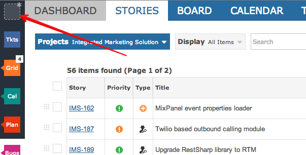
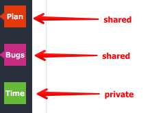
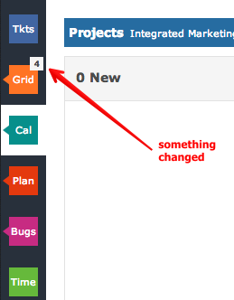
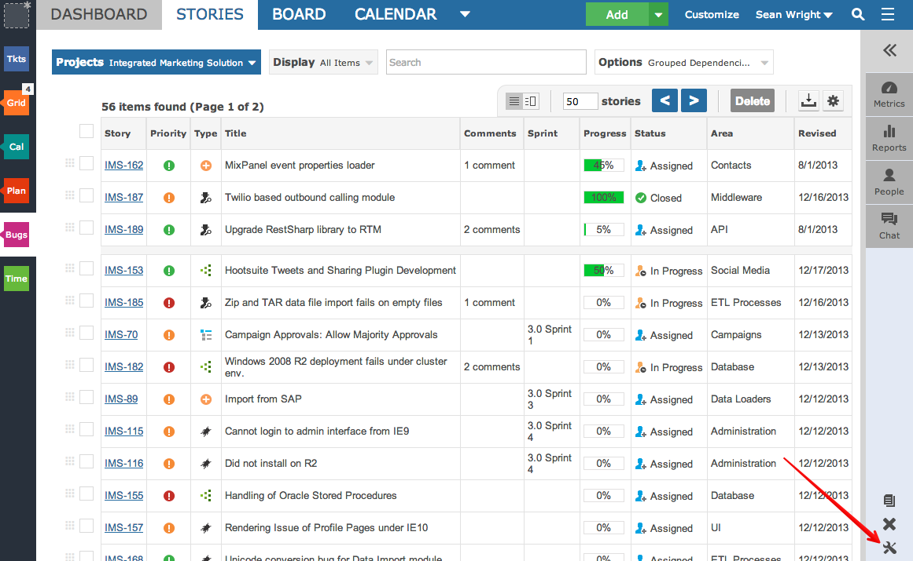

Workspaces enable users to set their favourite or important views.

When creating new workspaces you can provide a short key code and select a color.
You can also select the views that are associated with the workspace such as Grid, Board, Calendar and Timeline. This enables users to see only the views they care about in the workspace.
You also specify the taxonomy to be used within the workspace such as Agile, Issue Tracking and Help Desk ticketing.
Workspaces shared with co-workers are marked differently -- note the small triangle.

When a workspace is shared with co-workers, they see what you see. This keeps everyone on the same page and fully informed through badge notifications, scheduled reports and email alerts.
You will be automatically informed when something changes within a workspace.

There are various settings per workspace that can ne changed to suit your needs.

The options box for the workspace: